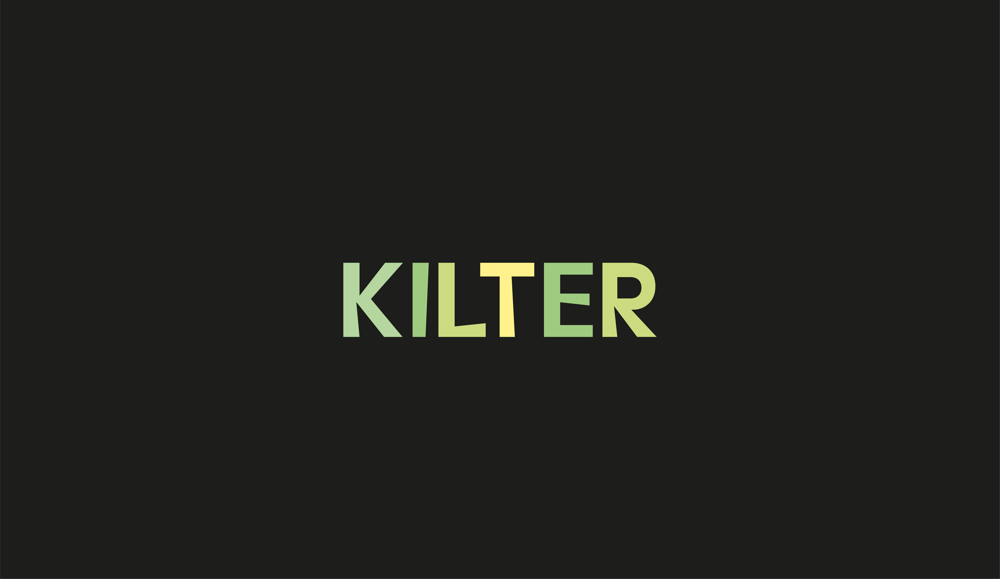
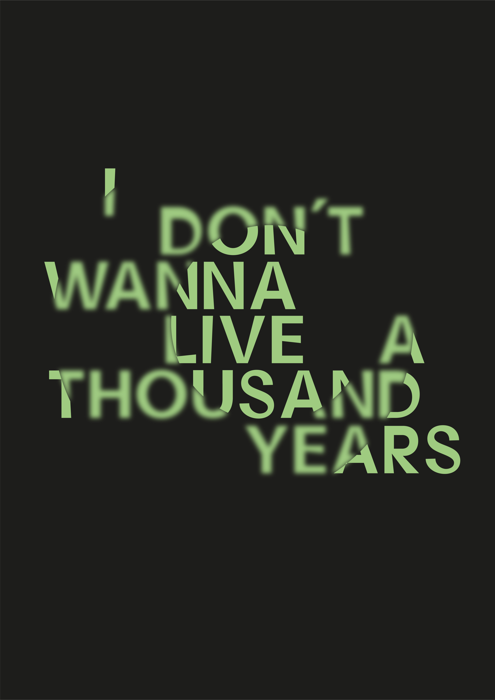
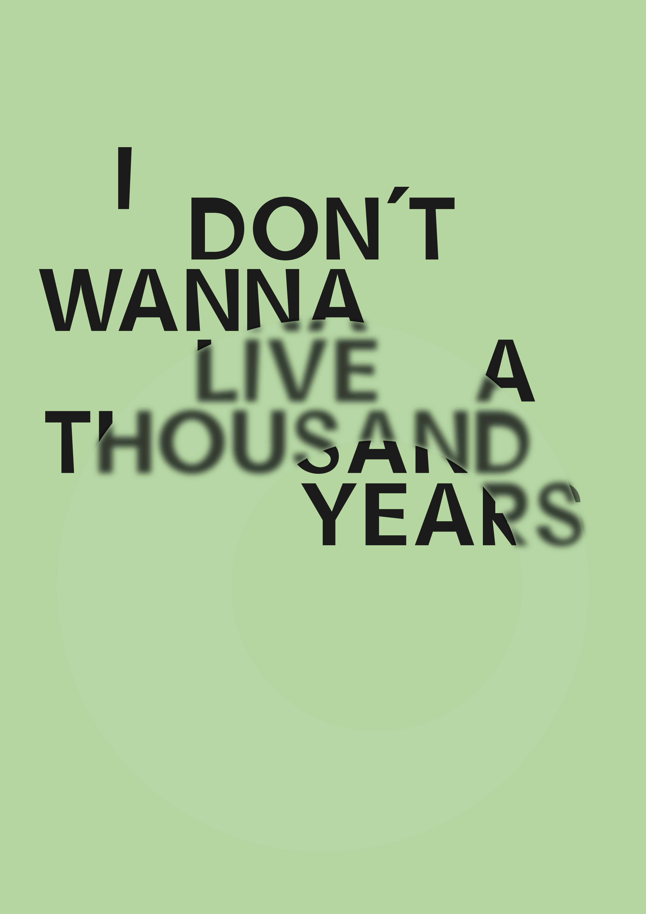
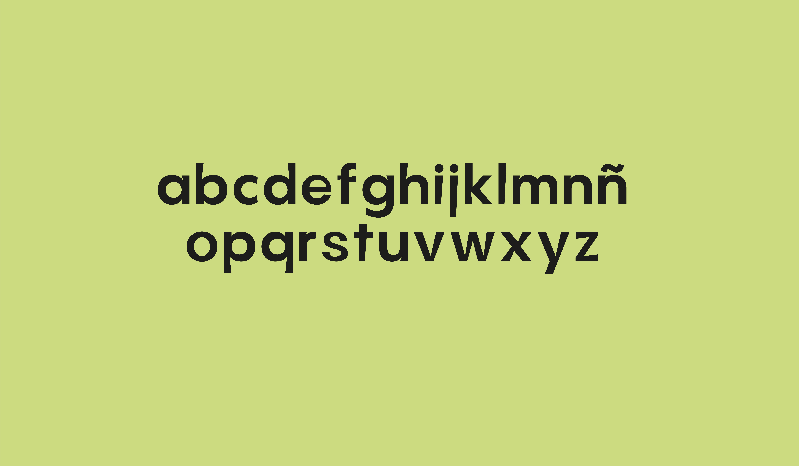
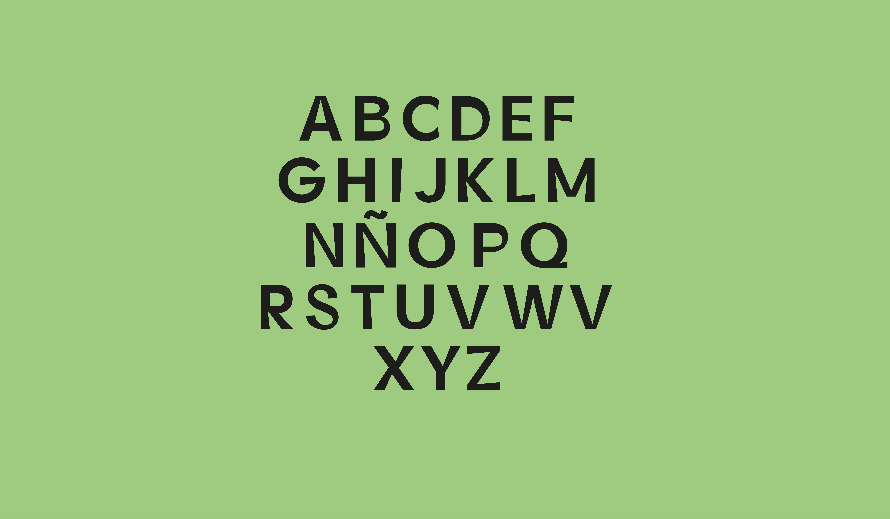
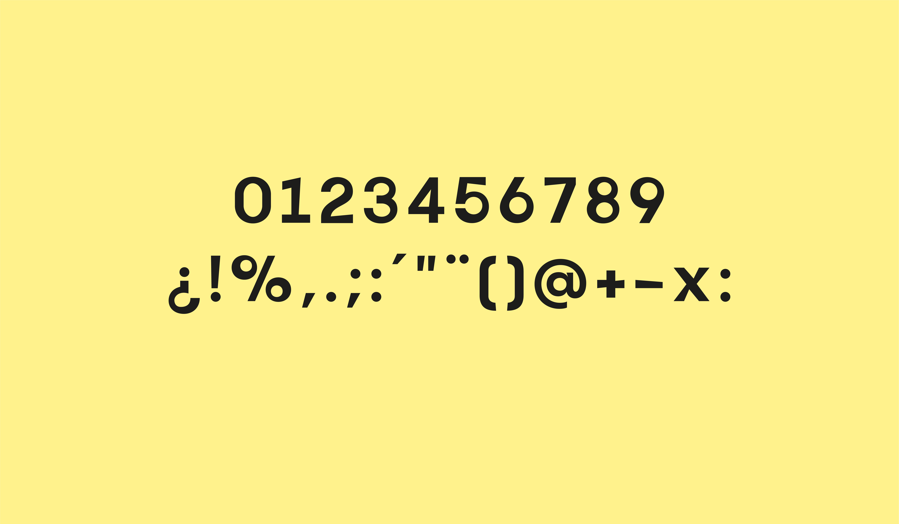
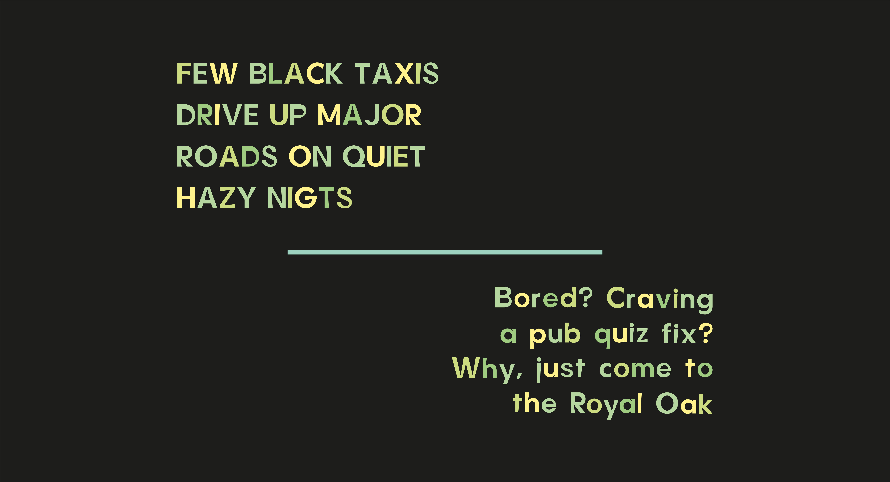
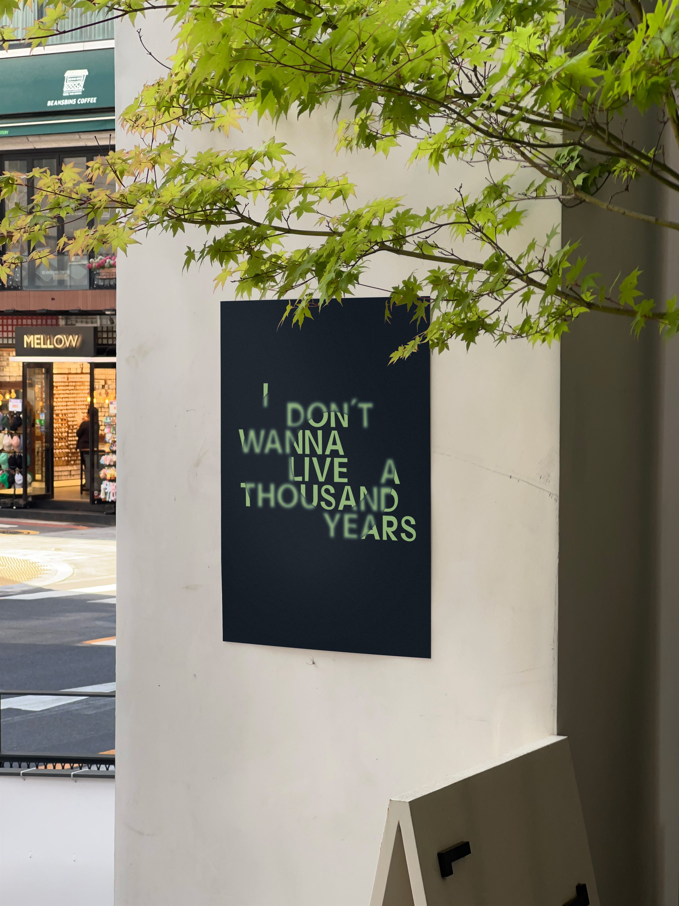
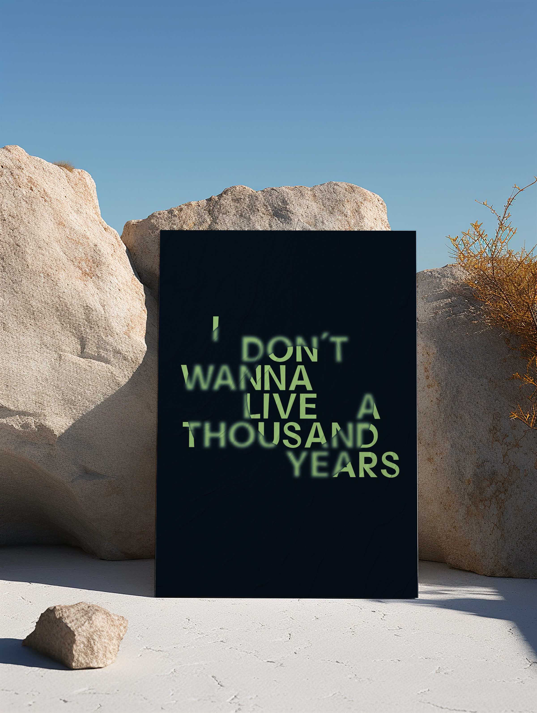
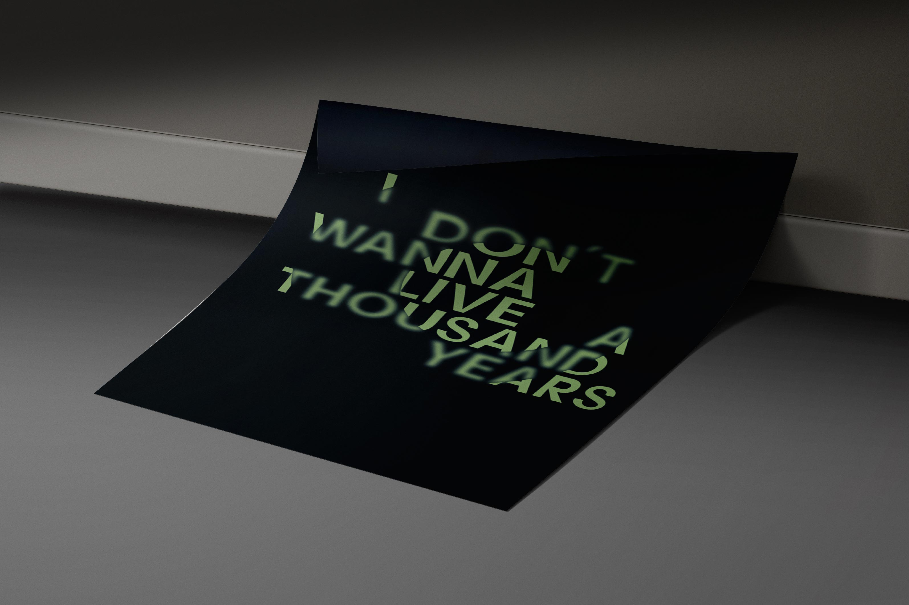

Kilter — Typography

Role
Type design
Type
University project · Original typeface
Year
2022
Tools
Illustrator, Photoshop
Kilter is a geometric sans-serif typeface with brutalist finishes. It was designed to be bold, intense and striking, while keeping a simple, linear essence at its core.



.jpg)
References. The starting point was three typefaces from Pangram Pangram Foundry: Telegraf, Mori and Pangram Sans. From them, Kilter takes a mix of geometric and grotesque features, pushed further with a touch of brutalism.
The off-centre detail. Kilter's signature is a deliberate off-centring that runs through every letter, either in the counters or in the arms of the flatter letters.



Two cases, two jobs. The uppercase is built for headlines. The lowercase is rounder and easier to read, so it works for text.
The character set. The typeface includes upper- and lowercase alphabets, Arabic numerals, punctuation and mathematical signs.



The result is a versatile, contemporary typeface that keeps its character in large headlines and stays readable in text.
